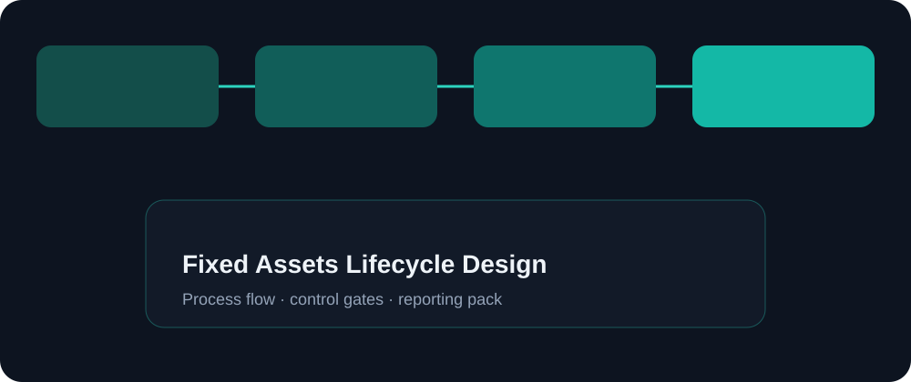

Objective
Design a Fixed Assets foundation that finance and operations can run every period without suspense buildup, missed capitalizations, or unclear retirement ownership.
A complete fixed-asset process blueprint — from capitalization thresholds and category design to depreciation books, transfers, retirements, and period-end asset reporting.
Knowledge / portfolio case study only. Not employment history, not a named client engagement, and not a certification claim.
Design a Fixed Assets foundation that finance and operations can run every period without suspense buildup, missed capitalizations, or unclear retirement ownership.
Multi-entity organizations often struggle with inconsistent asset categories, unclear CIP rules, and depreciation books that do not match reporting needs. This case study models a clean lifecycle.
In scope: capitalization policy checkpoints, category & book design, addition/transfer/retirement flows, depreciation calendars, and asset reporting pack. Out of scope: detailed tax depreciation engine configuration for every jurisdiction.
Workshop capitalization thresholds → map categories to GL accounts → define books & methods → design CIP-to-asset conversion → document transfers/retirements → build period checklist → validate with sample assets.

1) Capture a CIP invoice and track WIP. 2) Capitalize to asset with correct category. 3) Run depreciation for two periods. 4) Transfer between cost centers. 5) Partially retire and confirm gain/loss treatment. 6) Extract asset rollforward report.
No capitalization below policy without exception log; category changes require finance approval; depreciation cannot close until unposted assets are cleared; retirements require supporting evidence.
Shows end-to-end Fixed Assets thinking — process, configuration intent, controls, and reporting — ready for workshop or interview deep-dive.